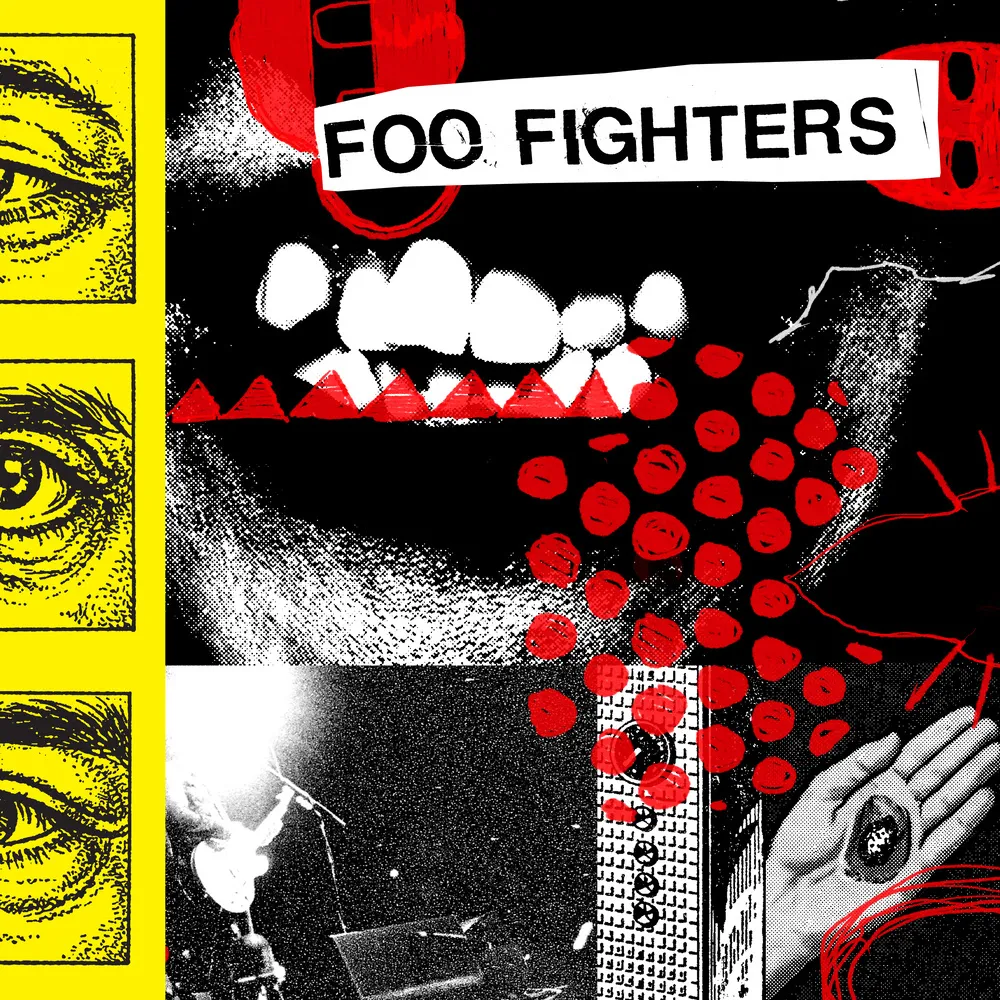
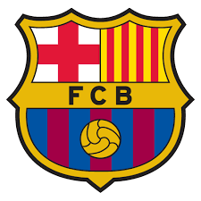

Video games
My favorite fighting game is Injustice 2.
About me / Chigozirim Jesse Amaefule
I’m studying Biomedical Engineering.
Here’s what draws me to the field, and where I hope to go.
Biomedical Engineering.
My interest in prosthetics drew me to Biomedical Engineering. It connects with what I want to explore: technology that supports the human body.
Biomaterials development.
After graduating, I would like to work in biomaterials development. It’s the direction I hope to pursue as I continue my studies.
My favorite fighting game is Injustice 2.
My favorite band is Foo Fighters.

I follow FC Barcelona.
